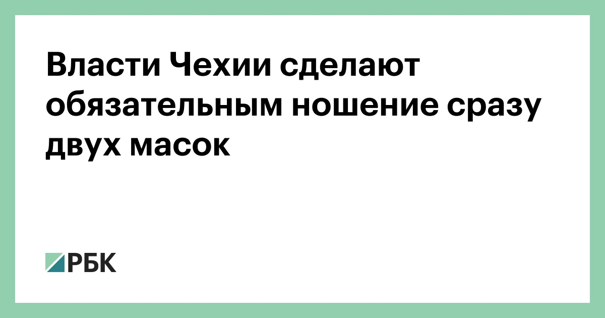
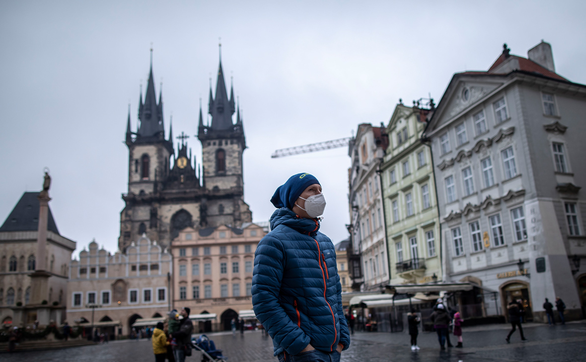
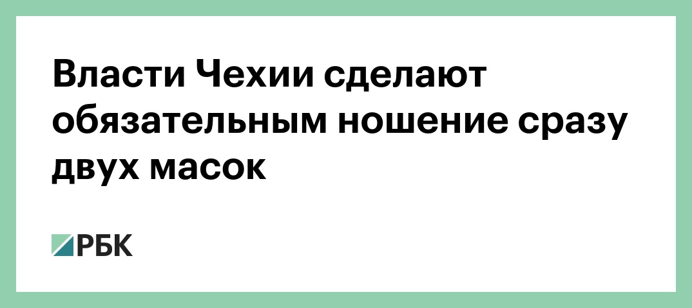

Власти Чехии сделают обязательным ношение сразу двух масок

В общественных местах Чехии из-за угрозы коронавируса придется надевать сразу две медицинские маски или респиратор.Об этом объявил министр здравоохранения страны Ян Блатный, передает газета Hospodarske noviny.
Соответствующее требование начнет действовать с понедельника, 22 февраля.В частности, ограничения коснутся магазинов и общественного транспорта.

«Невозможно будет считать различные самодельные ткани достаточной защитой», — сказал министр, посоветовав гражданам использовать респираторы со степень защиты не ниже FFP2 (модель KN95).
Чешский Минздрав связал ужесточение ограничений с ухудшением эпидемиологической ситуации из-за распространения «британского» штамма коронавируса.
Posted On: 2021-02-19T14:35:00

Content Date: 2021-02-19
Download Date: 2021-04-21
Document ID: L0C04AMSI